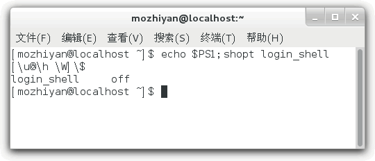

首页 > 编程笔记
Shell四种运行方式（启动方式）
Shell 是一个应用程序，它的一端连接着 Linux 内核，另一端连接着用户。Shell 是用户和 Linux 系统沟通的桥梁，我们都是通过 Shell 来管理 Linux 系统。
我们可以直接使用 Shell，也可以输入用户名和密码后再使用 Shell；第一种叫做非登录式，第二种叫做登录式。
我们可以在 Shell 中一个个地输入命令并及时查看它们的输出结果，整个过程都在跟 Shell 不停地互动，这叫做交互式。我们也可以运行一个 Shell 脚本文件，让所有命令批量化、一次性地执行，这叫做非交互式。
总起来说，Shell 一共有四种运行方式：
1) 查看变量
【实例1】在 CentOS GNOME 桌面环境自带的终端下输出
【实例2】在 Shell 脚本文件中输出
2) 查看变量
【实例1】在 CentOS GNOME 桌面环境自带的终端下输出 PS1 的值：
【实例2】在 Shell 脚本文件中输出 PS1 的值：
shopt 命令用来查看或设置 Shell 中的行为选项，这些选项可以增强 Shell 的易用性。
【实例1】在 CentOS GNOME 桌面环境自带的终端下查看 login_shell 选项：
【实例2】按下
【实例3】在 Shell 脚本文件中查看 login_shel 选项：
2) 执行 bash 命令时默认是非登录的，增加
3) 使用由
4) ssh 执行远程命令，但不登录时，为非交互非登录式。
5) 在 Linux 桌面环境下打开终端时，为交互式的非登录 Shell。
我们可以直接使用 Shell，也可以输入用户名和密码后再使用 Shell；第一种叫做非登录式，第二种叫做登录式。
我们可以在 Shell 中一个个地输入命令并及时查看它们的输出结果，整个过程都在跟 Shell 不停地互动，这叫做交互式。我们也可以运行一个 Shell 脚本文件，让所有命令批量化、一次性地执行，这叫做非交互式。
总起来说，Shell 一共有四种运行方式：
- 交互式的登录 Shell；
- 交互式的非登录 Shell；
- 非交互式的登录 Shell；
- 非交互式的非登录 Shell。
判断 Shell 是否是交互式
判断是否为交互式 Shell 有两种简单的方法。1) 查看变量
-的值，如果值中包含了字母i，则表示交互式（interactive）。【实例1】在 CentOS GNOME 桌面环境自带的终端下输出
-的值：
[c.biancheng.net]$ echo $- himBH包含了
i，为交互式。【实例2】在 Shell 脚本文件中输出
-的值：
[c.biancheng.net]$ cat test.sh #!/bin/bash echo $- [c.biancheng.net]$ bash ./test.sh hB不包含
i，为非交互式。注意，必须在新进程中运行 Shell 脚本。2) 查看变量
PS1的值，如果非空，则为交互式，否则为非交互式，因为非交互式会清空该变量。【实例1】在 CentOS GNOME 桌面环境自带的终端下输出 PS1 的值：
[mozhiyan@localhost]$ echo $PS1 [\u@\h \W]\$非空，为交互式。
【实例2】在 Shell 脚本文件中输出 PS1 的值：
[c.biancheng.net]$ cat test.sh #!/bin/bash echo $PS1 [c.biancheng.net]$ bash ./test.sh空值，为非交互式。注意，必须在新进程中运行 Shell 脚本。
判断 Shell 是否为登录式
判断 Shell 是否为登录式也非常简单，只需执行shopt login_shell即可，值为on表示为登录式，off为非登录式。shopt 命令用来查看或设置 Shell 中的行为选项，这些选项可以增强 Shell 的易用性。
【实例1】在 CentOS GNOME 桌面环境自带的终端下查看 login_shell 选项：
[c.biancheng.net]$ shopt login_shell login_shell off
【实例2】按下
Ctrl+Alt+Fn组合键切换到虚拟终端，输入用户名和密码登录后，再查看 login_shell 选项：
[c.biancheng.net]$ shopt login_shell login_shell on
【实例3】在 Shell 脚本文件中查看 login_shel 选项：
[c.biancheng.net]$ cat test.sh #!/bin/bash shopt login_shell [c.biancheng.net]$ bash ./test.sh login_shell off
同时判断交互式、登录式
要同时判断是否为交互式和登录式，可以简单使用如下的命令：echo $PS1; shopt login_shell
或者echo $-; shopt login_shell
常见的 Shell 启动方式
1) 通过 Linux 控制台（不是桌面环境自带的终端）或者 ssh 登录 Shell 时（这才是正常登录方式），为交互式的登录 Shell。[c.biancheng.net]$ echo $PS1;shopt login_shell [\u@\h \W]\$ login_shell on
2) 执行 bash 命令时默认是非登录的，增加
--login选项（简写为-l）后变成登录式。
[c.biancheng.net]$ cat test.sh #!/bin/bash echo $-; shopt login_shell [c.biancheng.net]$ bash -l ./test.sh hB login_shell on
3) 使用由
()包围的组命令或者命令替换进入子 Shell 时，子 Shell 会继承父 Shell 的交互和登录属性。
[c.biancheng.net]$ bash [c.biancheng.net]$ (echo $PS1;shopt login_shell) [\u@\h \W]\$ login_shell off [c.biancheng.net]$ bash -l [c.biancheng.net]$ (echo $PS1;shopt login_shell) [\u@\h \W]\$ login_shell on
4) ssh 执行远程命令，但不登录时，为非交互非登录式。
[c.biancheng.net]$ ssh localhost 'echo $PS1;shopt login_shell' login_shell off
5) 在 Linux 桌面环境下打开终端时，为交互式的非登录 Shell。

关注公众号「站长严长生」，在手机上阅读所有教程，随时随地都能学习。内含一款搜索神器，免费下载全网书籍和视频。

微信扫码关注公众号